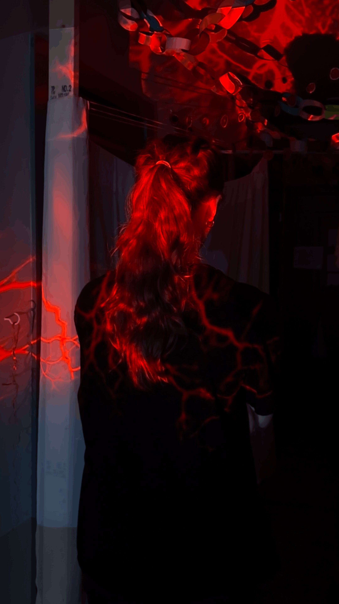

Anna Horzen is a Nashville-based projection designer and photographer who received her bachelor's degree in Human and Organizational Development from Vanderbilt University in 2022.
Anna has continuously worked within the world of visual production since middle school, when her brother and her would make silly videos about her hamster, Penny. The transition into the world of projection design was a natural one that helped bring her technicolor dreams into the world around her.
Anna most recently designed the projections for Amm Skellars' production of "I Saw Goody Proctor with the Devil" at OZ Arts, as part of the Kindling Arts Festival.